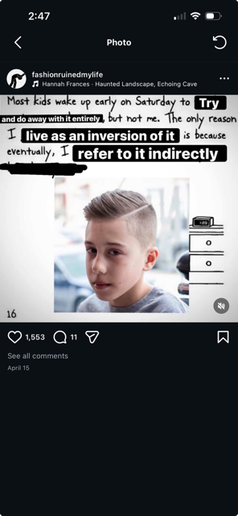

glitch manifesto (reading*2*)
The perception is not controlled by the artist but is enacted by the software or the way the noise is
created,
Ended up putting this off even more than I wanted to because I put my time into music :) I'm not mad about
it I just know that is what happens sometimes.
started on this remix:
Clarity for what purpose? Is the way that we perceive it fully not enough?
Does there need to be something more?
I like the way they put it that the holy grail of perfection is a myth
Glitch is talking about the art of artifacts the things in between, existing within everything, noise this
other stuff.
Knowledge and convention hold us away from the artifacts
We communicate with the machine and doing this you cannot ignore the ways that the machine is, or what it
does, considering this takes away the idea that there is a perfect way something could be
I liked that Menkman talked about noise having a judgement attached to it. Something outside of
categorization,
noise that communicates directly with our perception, does not ask us to see something through it.
Glitch as:
- being lost in the breaking of perception
- holistic celebration of the thing
“The glitch has no solid form or state through time; it is often perceived as an unexpected and abnormal
mode of operandi, a break from (one of) the many flows (of expectations) within a technological system. But
as the understanding of a glitch changes when it is being named, so does the equilibrium of the (former)
glitch itself: the original experience of a rupture moved passed its momentum and vanished into a realm of
new conditions. The glitch has become something new and has become an ephemeral, personal experience. “
Something --> deconstructed --> destroyed --> the thing becomes the way it is perceived --> thing can be
taken and formulaified --> thing is engenred --> then you break it again (hopefully)
I feel kinda familiar with the divide between rote “glitch” methods to shape sounds, based on end product
and not making new like in ableton you can kinda guide corpus and then OTT something so you can hear the
artifacts caused by corpus’ LFO knob or like
Frequency shift something over and over up and down the same amount to hear the algorithmic noise that
represents how those are being shifted.
These are known “glitches” even like this is just stuff from a youtube video but taking these ideas further
and breaking down more of the possible is what (makes stuff good)
piezo on metal is a better recipe to maybe connect to pg7, you control the sound you can guide it but the
experience is because of the metal acting too
Like just as much as you
Just as much as you are in listening to it interacting with it as something worth attention
Contextualizing the “noise” in the same sense you would anything else
This kinda has to be trans-media, attacking the form its on is important
I keep thinking with sound because why not, there its so easy to see how the scope of glitch crosses the
boundary of rote music creation with instruments and set guidelines, especially outside of genre,
“Theorists have also been confronted with this problem. For them, terms like post-digital or post-media
aesthetics frequently offer a solution. Unfortunately, these kinds of terms seem to be misleading because in
glitch art ‘post’ actually often means a reaction to a primer form. But to act against something does not
mean to move away from it completely - in fact a reaction also prolongs a certain way or mode (at least as a
reference)”

You demonstrate against the media and within the media, it cannot be done away with entirely.
but it will be changed through the slow hands of the people who want to change it. better than in the same
boring ways that the people selling tools will break those tools.
The language that you’re speaking with glitch talks directly with the machine and the ways that the medium
is being purposefully created or put into boxes. By the methods the machine or medium is worked with or with
the boxes that the end product is being formed into.
Glitch in this way can show you where these lines are drawn by breaking them.
“The best ideas are dangerous because they generate awareness.”
All the quotes are from the glitch manifesto -Rosa Menkman
Wrote this listening to https://soundcloud.com/c0ncernn/sets/status-update-music
thinking about reading (reading*3*)
Interacting with viewing limits
the screen, the listening ability, the video being taken
the social positioning of you and the artist
talking about the parasocial
social informs the aesthetics
Aesthetic engagement is related
to spectatorship because objects are understood
through particular embodied positions, cultural
values, beliefs, and points of view.
For instance, power is delivered
to certain individuals through seemingly universal codes of beauty, such as body shape and skin color.
but subverting this also provides an aesthetic
when styles are copied away from their meaning
According to Brett
Stalbaum, net art's formalism involves the
exploration of the HTTP protocol, HTML, and
browser specific features as a unique medium in a Greenbergian sense."
what is greenbergian??
quotation and denial of art:
I see the ability to move away from class structures around high art in net art, but how many of these ideas
get reified by net art, it is still the creation of someone in a system governed by hierarchies
I like the misinterpretation embrace, again
adaweb!!
ARGs an example of misinterpretation and making/losing intended meaning
"problems with maintaining aura online." lol
Net art playing with the environment in a very specific way, that cannot be preserved or redistributed its
decentralized and not marketable.
thinking about reading (reading*4*)
Talking about the specification process: this has been taught to me in a really formal way, often
incorporated with the narrative that business logic you are being told is unreasonable/you need to find
a way to translate it that will please capital. Often involving meeting back with people who are pushing
a spec to change your model as part of agile.
Instead of that being the process described here, we are talking about the translation process and the
differences between specification, the programmer’s interpretation, and the actual code being part of
the artistic process.
This also reminded me of naive copy and paste or paper cutting art (find source) where you are given
directions on things like number of cuts, but not exactly where they should be. The process is the
art.
3. Irrational judgements lead to new experience.
When a piece of music is performed, the musician interprets the composer's score according to her own
ideas and in relation to the composer's intent. This relation became more pronounced in the 1960s
through the work of composers like Karlheinz Stockhausen. Umberto Eco wrote in 1962: [7]
This connection!! You interpret a piece while playing it, it is the human component of playing that specific
piece. This feels like the art --> translates to computer art.
Writing software is a process of translating fuzzy ideas from one's mind into a strict notational system.
Using this notation as an intermediate step, visual and kinetic ideas manifest themselves in computational
machines.
A benefit of working with software structures instead of programming languages is that it places the
work outside the current technological framework, which is continually becoming obsolete
This is also interesting to me, placing the artistic ‘value’ onto the framework and spec instead of its
implementation is so fun.
Specifying stuff is a lot closer to the stream of consciousness creative place for me than trying to fully
articulate this in software.